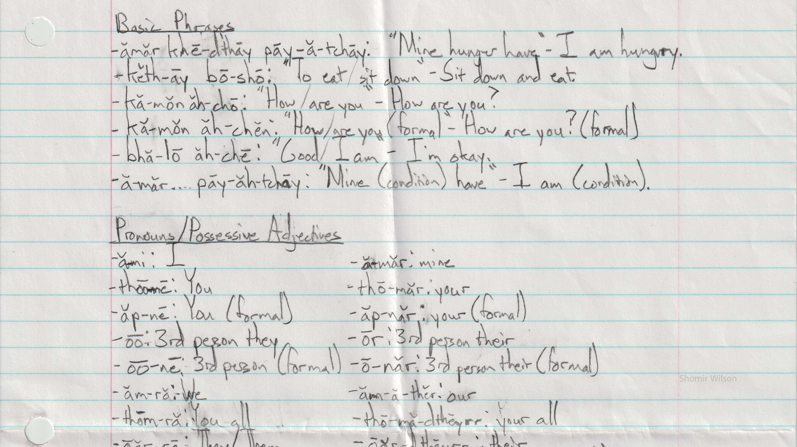
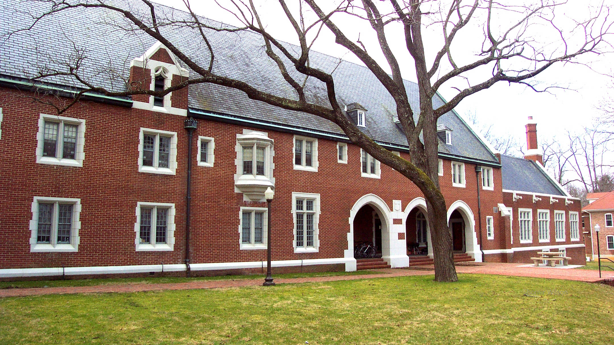
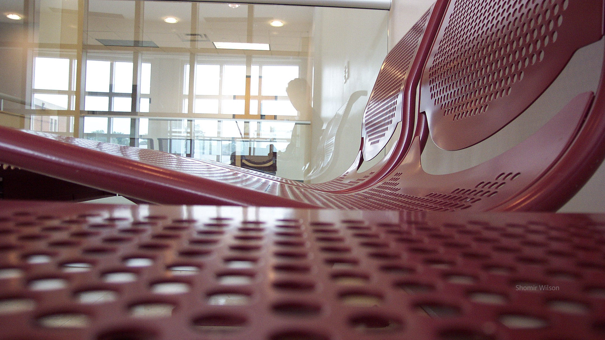
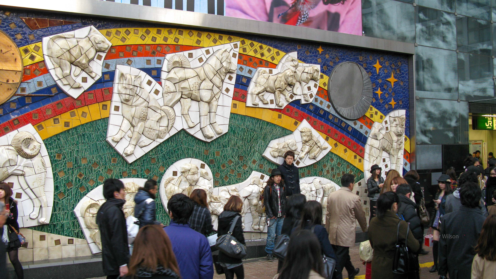
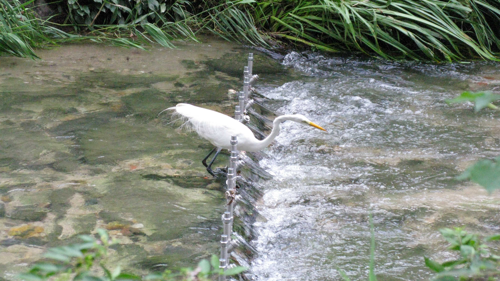
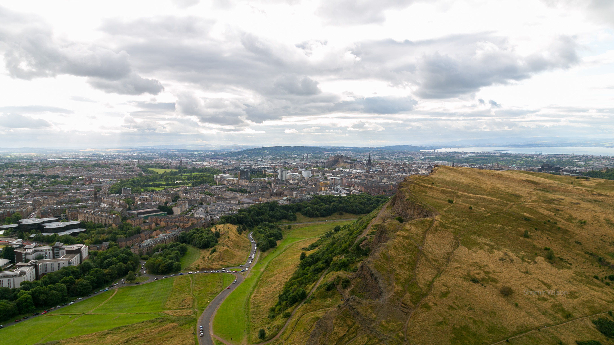
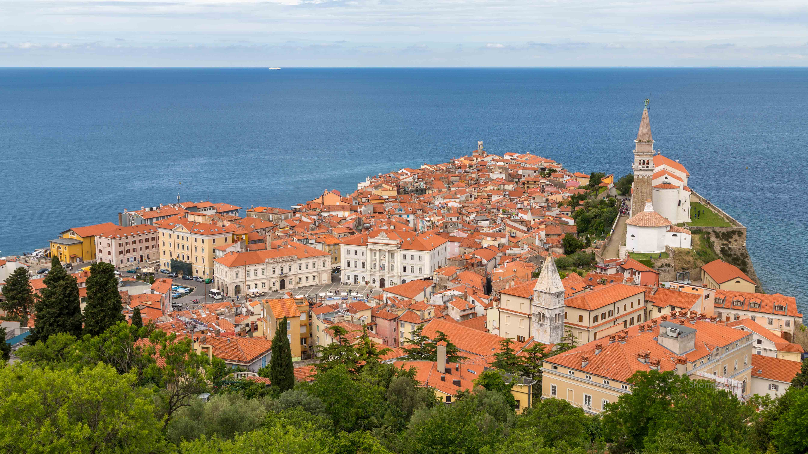
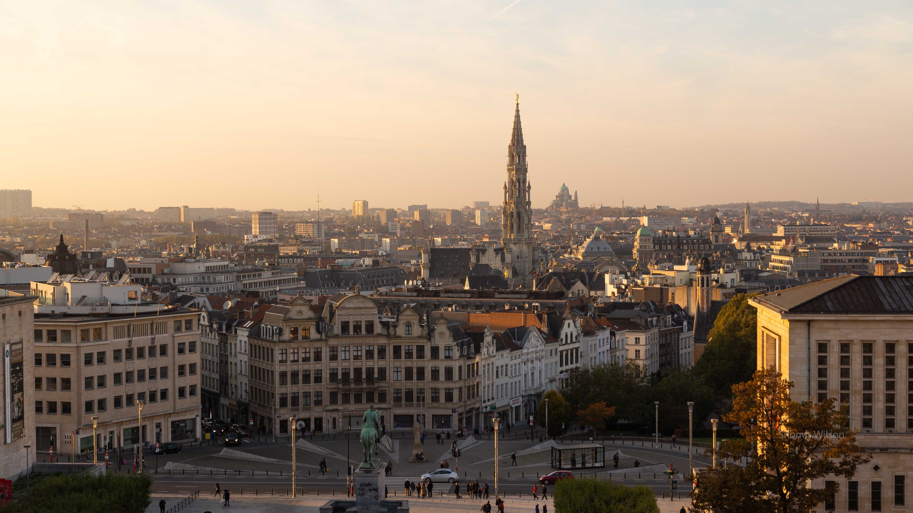
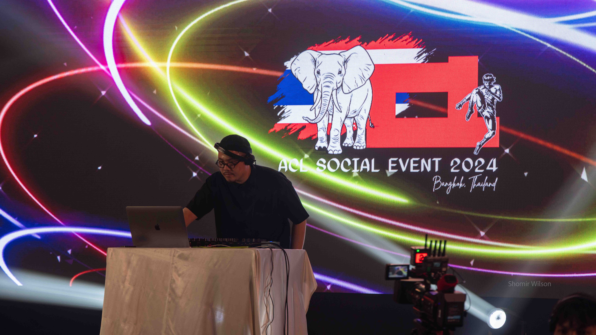
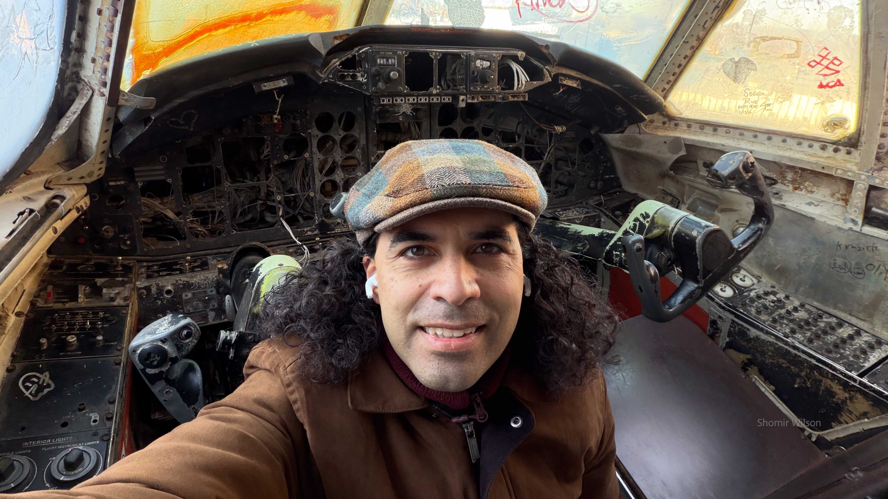

This page is part of Travel and Meaning and my advice pages.

August 5, 1998
Netaji Subhas Chandra Bose International Airport, Kolkata, India
My first visit to India was coming to an end. I sat with my mother and sister in a departure lounge of Calcutta's airport, facing a large window. We were waiting to board our flight to London, where we would connect onward to Washington. It was a late-night departure, and the other travelers in the room were quiet. A uniformed policeman stood in the corner with an ancient-looking rifle, and a cigarette vendor sorted his wares in a booth against the wall.
I watched as two parents and their toddler son walked in and settled down a few seats to my right. I guessed by their appearances they were an Indian family. The parents seemed tired, but the toddler was not. He asked his mother for a snack, speaking in English with an Indian accent, and received some cookies that he crumbled onto the floor. He complained the departure lounge was cold and asked for his jacket. I silently agreed with him that it was cold; the air conditioning I encountered in India often seemed overenthusiastic.
My attention returned to the large window in front of us. In the dark I saw the lights of a landing plane and wondered if it was ours. My sister and I had traded turns for the window seat on the way to India, but I had made up my mind for this flight to suggest we offer it to our mother. This was her first visit back to India in decades.
Meanwhile, the toddler paced back and forth while clomping his sandals on the floor. He recited one sentence, over and over: "You are an American, not an Indian. You are an American, not an Indian..."
I looked to his parents for a reaction, but they remained expressionless as they stared out the window.
The toddler stopped pacing and tugged at the cuffs of his father's khaki pants. He pulled with rhythmic emphasis as he continued: "You are an American, not an Indian. You are an American, not an Indian..." His mother sighed and continued staring straight ahead.
I wondered under what circumstances he had been told that, and why.
I wondered what I was. An exclusive decision—Indian or American—seemed obligatory, but either answer alone felt incomplete.

March 19, 2005
Blacksburg, Virginia
It was my final semester at Virginia Tech. Returning from an event across campus that morning, I walked through the first floor of my dorm, which contained the offices for the honors program, a living room, and a dining room. A ceremony to announce the winners of several university scholarships had just ended in the dining room. Three years earlier I had applied for one of those scholarships, and I was eliminated in the first round of interviews. My girlfriend, a few years behind me, was a finalist for a similar one this cycle. She had applied to spend a summer in Spain.
A staff member and I crossed paths in the dispersing crowd, and he told me simply: "She won it. Congratulate her."
Setting aside that he knew more about my personal life than I would have expected, I found her, and I congratulated her.
It didn't bother me that she had won a thing I hadn't, or that she would be gone for several weeks while living abroad on the scholarship. Overshadowing those typical relationship obstacles was the fact that in the fall I would start a PhD at a different university, five hours away.

May 30, 2006
Cantonsville, Maryland, USA
As a PhD student, I sometimes traveled to another university 30 miles away for a collaborative research project. One morning there after a large meeting, I joined a smaller meeting with a postdoc and a recent PhD graduate from my university who was in the final days of his research assistantship. During a pause in our work, the postdoc asked the recent graduate what he planned to do next.
He expressed ambivalence: "Go back to Malaysia. Farm something."
The postdoc asked for more details, but the recent graduate fell silent. The conversation returned to our work.
My advisor had given me a ride to the meeting, but he was unavailable for the return trip, and instead the recent graduate gave me a ride back. I gently probed the topic of his career plans, and he explained that academia didn't let him focus on research in the ways he wanted to. Farming—a lifestyle he had grown up with—would give him time to think. We talked about our graduate school experiences, and I thought it was light conversation until he suddenly asked me if I experienced depression. I told him no, but it was a reflexive answer.
I didn't have another chance to speak with him, and a couple years later I wondered what happened to him. I checked his professional website and found it blank except for a quote attributed to Kahlil Gibran, a Lebanese-American poet:
"Trees are poems that the earth writes upon the sky. We fell them down and turn them into paper that we may record our emptiness."
People with PhDs in computer science rarely lack a findable online presence, but I've searched for him several times since then and found nothing after his graduation.

February 22, 2011
Tokyo, Japan
I boarded the subway at Waseda Station, taking an empty seat. It was mid-afternoon and I was leaving the conference early that day to go sightseeing. I wanted to visit Shibuya, where my first goal was to see the enormous crowds at Shibuya Crossing. After that I would wander through the neighborhood with the help of my guidebook.
The previous day I had presented a poster at the conference, representing a paper I wrote that had been accepted for publication. I had traveled to Tokyo to do that, and the paper was the most significant one I would publish from my dissertation research before graduating in a few months. However, the response to my work felt underwhelming: I received only a few questions, and for long periods of time I stood unnoticed between presenters with more popular posters. Still, during the coffee breaks and social events, I had connected with people and possibly even made friends. I was also in Tokyo, and its ultramodern cityscape beckoned.
When the train stopped at a station, the man to my right got up and stepped off. His departure revealed that he had been sitting on a large clump of what appeared to be tuna salad, which remained on the seat. I wondered how he had been oblivious to it, but soon afterward at the same stop, a woman entered with a stroller and immediately sat down without looking. I knew four words of Japanese, and "you’re sitting on tuna salad" was beyond my language skill. My prior attempts to use English with locals in Japan had been met with blank stares.
A minute later she stood up to reposition the stroller, and I took the opportunity for nonverbal communication. I gestured with my hand toward the tuna salad with a worried expression on my face. I had her attention, but she solely made eye contact with me and didn't notice what I was gesturing at. I wondered if she had interpreted my gesture as an unnecessary beckoning to sit down while the train was moving.
I directed my eyes toward the seat and intensified my worried expression. That worked: she saw the tuna salad. She looked at me again, this time horrified and questioning. I stopped pointing and shrugged my shoulders with the palms of my hands upward. It felt theatrical, but it was the best I could do to communicate.
She tried to clean herself off with wet wipes from the stroller, and at the next stop she got off. I looked at the facial expressions of people sitting across the aisle from me, hoping for confirmation of the strangeness of what had happened. I received blank, silent stares.

July 19, 2012
Seoul, South Korea
I walked along Cheongyecheon, a stream that cut through the center of Seoul in a below-grade channel with walkways alongside. Blocks and other artificial structures in the water created rapids, and the sounds of the water masked the sounds of the city. For a scene of mostly stone and concrete, it was surprisingly peaceful and calming.
The previous week in Jeju I had presented at a conference, sharing the most important results of my dissertation. The audience's questions showed only mild enthusiasm, but their interest was the most I had received for my dissertation, and I felt conflicted. Afterward I visited Mongolia, accomplishing a goal since childhood—even if I hadn’t fully realized as a child what I wanted—and now I was spending two days in Seoul before returning home to Pittsburgh. I thought about how this trip compared to my much longer visits to Australia three years prior and to Singapore two years prior. Just after those trips, they felt like highpoints I may never surpass, but my landscape of experiences was growing more complex. I felt less motivated to surpass them if they could become mere highlights in a larger body of experiences.
A heron stood in the stream just above a slight waterfall that was no taller than its legs. Its neck was extended as it concentrated on something on the lower side. I stopped walking when I reached a spot adjacent to it on the shore, and I pulled out my camera. I assumed the heron was stalking a fish in the water. I had visions of entering photography contests with the pictures I had already taken in Jeju and Mongolia, and a heron grabbing a fish could be a stunning shot.
I took a few practice shots and waited with my camera ready. Soon, a woman who had been walking along the same side of the stream but in the opposite direction stopped beside me to watch as well. She first looked at me as if she wanted to speak with me, but she remained silent. Contrary to the advice in my guidebook, I had mixed experiences with trying to communicate in English with South Koreans. I found Korean slightly easier than Japanese, but I still knew only a few words.
The heron remained frozen, as did we. After a few minutes my camera automatically powered off, and I turned it on again. The tension climbed, even as I wondered whether the hypothetical fish in the water would have stayed within the heron’s striking distance that long. However, the heron extended its neck very slightly, and I wondered if new prey had come into view. I pressed my camera's shutter button halfway down, refocusing it to remain ready for a shot. The woman and I continued waiting in silence.
The heron simply hopped down the waterfall and walked away.
Relieved of the tension, the woman and I cracked up into laughter and resumed walking in our separate directions. We had exchanged no words, but none were necessary.

July 29, 2014
Edinburgh, Scotland
My girlfriend and I were at the summit of Arthur's Seat, a rocky hill near the center of the city. It was the early evening of our last day in Edinburgh, where we had lived together for nearly a year. Soon we would return to Pittsburgh, where previously we had lived together for two years.
I proposed to her, and she said yes.

May 25, 2016
Portorož, Slovenia
Two days prior at a conference workshop, I had presented a paper about my research as a postdoc. One day prior I explored Piran, a small town on Slovenia's sliver of Adriatic coast near where the main conference would be, and in the evening I had returned to my hotel room for an important phone call. I was negotiating offer details for my first tenure-track position, and I asked for an extension to the offer deadline so that I could attend one more interview. I didn't name for them the other university, which was in the United Kingdom. The person I spoke with agreed graciously, and I thanked them. Today was the first day of the main conference, though the distractions of the academic job market continued: I exchanged emails with a mentor at the UK university about my upcoming interview. I found it difficult to pay attention to presentations at the conference.
For lunch, I went to a nearby restaurant that was rapidly becoming crowded with conference attendees. The hostess asked me to join a table where they had already seated a young man dressed in a plain t-shirt and shorts. We talked lightly at first, and I learned he was a PhD student at a University in the United Kingdom. After a few minutes he opened up and told me a personal story that had defined the past few years of his life.
He was a Syrian refugee, though he considered himself lucky: he had gotten out of the country early in the country’s civil war. He told me about hiding in the basement of his home while planes dropped bombs nearby, but he also said he got out "before things got really bad". When he left Syria he anticipated returning soon—he had left for a reason other than the civil war—but after he successfully exited, his parents told him not to return. They escaped a few months later, and since then they had settled down in Europe. They were well-educated and had found jobs.
I asked him a few questions, but I mostly listened as he spoke. He told me he felt ashamed of being scared while hiding in the basement, and I assured him that being afraid seemed very reasonable. He expressed surprise that he had shared so much with a person he just met. I explained that strangers often open up when they talk to me.
An hour later, I left the conversation stunned. He wasn't the first Syrian I had met; a restaurant in my Pittsburgh neighborhood was owned by an older Syrian man who had kept CNN on a TV in the corner when the war began, and we occasionally spoke. However, the young man I had just met had given me his story, and I thought about the significance of that act. I also thought about the phrase citizen diplomacy and what it meant to meet him at an international conference. Few of my friends outside academia understood what I did at conferences, and I felt a growing urge to tell them.
Ten years later I found his name in my notes and looked him up. He had completed his PhD and settled in the European Union, working for a major tech company at a location near his parents.

November 3, 2018
Brussels, Belgium
I stood in a stunningly long line to get into the conference reception that evening, outside in the cold, several hundred feet from the entrance to the venue. A cluster of people in front of me and those behind were respectively engaged in lively conversations. At the opening session the conference organizers had apologized that registration far surpassed expectations, and they had to split the attendance into 7pm and 8pm admission to the reception. I received an 8pm ticket, although the line had been stationary for a long time, and I guessed I wouldn’t get inside until closer to 9pm.
In boredom, I messaged an acquaintance who was also at the conference and asked if she was in the line. She said yes, but she was giving up and planned to go elsewhere for a Belgian waffle. I briefly considered joining her, but I wanted a more satisfying meal. I stayed in line and hoped the reception wouldn't run out of food.
The line began moving sporadically, but light rain began too. I wanted someone to commiserate with, but the conversations around me seemed impenetrable. A few places behind me I saw someone who was alone and unengaged in conversation. She was familiar; I thought I might have seen her at another NLP conference earlier that year in New Orleans, but we hadn't talked. As people in conversations began walking alongside each other, the line compressed into a long, gregarious crowd. I slipped back in the line to start a conversation with her.
We discovered we had both begun tenure-line faculty positions that fall: she was starting directly after her PhD, and I had just moved from the University of Cincinnati to Penn State. We talked about our research, but found more to discuss in our perspectives on academia, literature, the places we had grown up, and what motivated our careers. We got tired of the loudness and the crowdedness of the reception and sought hot chocolate elsewhere in the city. We finally parted around midnight, after three and a half hours of conversation.
Before parting, I observed to her that in our careers we were foils of each other. She had gotten a tenure-line position quickly, while I needed several years of postdoc positions and even then the first tenure-line position didn’t feel like the right fit, leading to my recent move. I told her I was glad people with her good fortune existed, because they were a counterbalance to people like me.
The chance encounter was the start of a long-distance friendship. Eight years later, we still catch up on video calls once a month and spend time together when our conference trips coincide.
May 3, 2023
Dubrovnik, Croatia
The DJ played ABBA's "Dancing Queen", and the crowd cheered. The song was widely recognized in the US but it seemed to hit a crowd differently in Europe, with even greater enthusiasm. I was at the evening social event of a conference that was mostly European in attendance. Social events at artificial intelligence conferences varied widely, but the most common variety was a loud dance party like this one. I rarely participated in the dancing, and instead I tried, sometimes unsuccessfully, to have conversations over the din.
I walked up to a standing table to join another attendee who also looked on at the dancing crowd. I asked her where she was from, and she replied quickly with a smile verging on laughter: "Ukraine—do you want to go to Ukraine?” I told her it seemed like an interesting country and I’d be glad to visit someday, but now didn't appear to be the right time. I mentioned the Russian invasion disrupting transportation, and she described a long journey to the conference involving several trains and flights.
She lived in a city in Western Ukraine that was spared from the heaviest fighting, but missiles still occasionally landed there. She was an undergraduate, and she told me how her university was closed for a month when the invasion began—as were all schools—and she had helped to assemble care packages for Ukrainian soldiers on the front lines. She was about to graduate, had accepted a job offer, and was thinking about earning a master's degree on the side. All of those plans were in Ukraine, and she didn't mention any desire to leave. It was her first major research conference, and I asked her what she thought of it. "Big as hell!", she replied with the same smile. I told her I hoped she would attend more in the future.
After a few minutes' conversation she joined the dancing and I headed for the exit, tired of the loud music. I was sharing a continent with a war, I thought, although I was only visiting for a conference. All the Europeans I met were living much closer to it than I was. Highway infrastructure was different in Europe, but on an American scale, the distance from Ukraine to the dance party was merely a long day's drive.

August 15, 2024
Bangkok, Thailand
I was attending a conference workshop, and one session was devoted to small group discussions. In my group, a professor explained to us why he couldn’t get access to relevant resources for his work. "I am from Myanmar," he casually explained, "and as you know, we are in civil war."

February 19, 2026
St. Louis, Missouri
During the conference opening session, an organizer onstage named the authors who had won best paper awards and asked us to stand. I stood and received applause.
The previous summer, when I wrote the paper, it seemed outrageous: I was working on a single-author manuscript in a discipline where faculty rarely did that. The manuscript was nominally a position paper, but by combining my philosophy knowledge from college and my experiences as a professor, I had written an analytic philosophy paper in disguise. I submitted it to the flagship conference of a scholarly community in which I had never published or even attended an event. I had shared my ideas with someone who had been to the conference before, and they suggested I submit it somewhere less competitive, but I wanted the challenge first.
Later, a friend who had been elsewhere in the room told me she hadn't seen me among the people standing. I reflected on how difficult it was to find one person standing in a room of over a thousand attendees, even if nearly everyone else was seated. The moment was anticlimactic, but it meant more to me than a moment of being seen. My ideas about a core topic in academia had been recognized as valuable by peer reviewers. It stood to reason that, in spite of all the mixed signals, I belonged in academia too.
Continue to Part 6 or go to the Table of Contents.